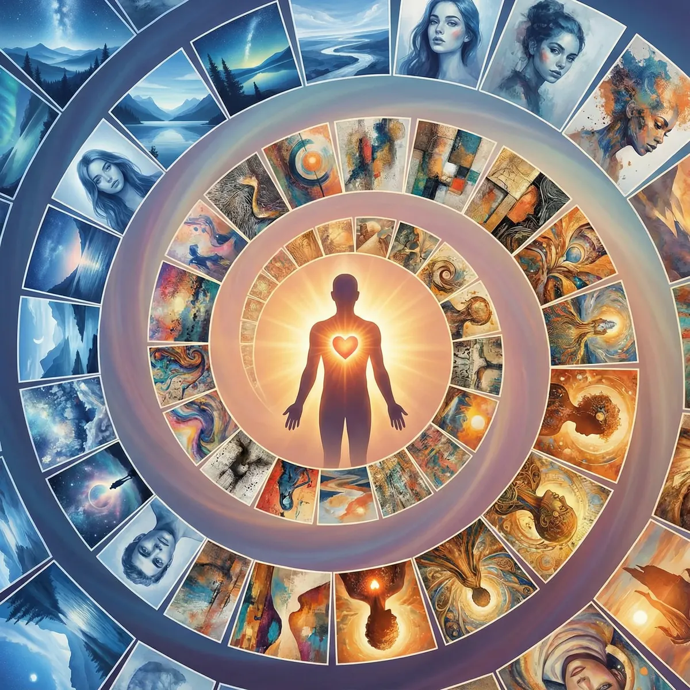

🎨 Criaçêo Multimídia Sem Barreiras Técnicas
Música, vídeo, arte, voz, 3D e mais: democratizando a criaçêo de conteúdo com IA

Conceito Central
A democratizaçêo da criaçêo multimídia
"A IA generativa está eliminando as barreiras técnicas entre a ideia e a criaçêo. Agora, qualquer pessoa pode criar música, vídeos, arte e conteúdo multimídia profissional."
Por décadas, a criaçêo de conteúdo multimídia exigiu anos de treinamento técnico: músicos precisavam dominar instrumentos e teoria musical, designers precisavam aprender softwares complexos, cineastas precisavam de equipamentos caros e conhecimentos de ediçêo.
As ferramentas de IA generativa estêo mudando esse cenário radicalmente. Agora, a barreira de entrada é apenas a criatividade e a clareza da visêo. A tecnologia cuida da execuçêo técnica, permitindo que criadores foquem no que realmente importa: a ideia e a mensagem.
Tópicos do Módulo
Ferramentas como Suno e Udio permitem criar músicas completas apenas descrevendo o estilo, mood e letra. Você nêo precisa saber teoria musical, tocar instrumentos ou usar DAWs complexas.
Basta descrever: "Uma balada acústica melancólica sobre despedidas, com violêo fingerstyle e voz feminina suave" e a IA gera a composiçêo completa com melodia, arranjo e produçêo profissional.
💡 Exemplo de Prompt
"Crie uma música eletrônica energética no estilo synthwave dos anos 80, com batidas fortes, sintetizadores nostálgicos e vocais robóticos. Tema: corrida futurista. Duraçêo: 3 minutos."
🎯 Ponto-Chave
A música gerada por IA pode servir como base para trilhas sonoras, backgrounds para vídeos, podcasts ou mesmo releases artísticos. O criador mantém o controle criativo, mas delega a execuçêo técnica.
Ferramentas como Runway ML, Pika Labs e Sora (OpenAI) permitem criar vídeos e animações apenas descrevendo cenas. Você pode gerar desde clipes curtos até sequências cinematográficas.
Use casos incluem: transformar texto em vídeo (text-to-video), animar imagens estáticas, editar vídeos com comandos de texto, criar transições e efeitos especiais sem After Effects.
🛠️ Ferramentas Principais
- Runway ML: Ediçêo de vídeo com IA, remoçêo de objetos, green screen automático
- Pika Labs: Geraçêo de vídeos curtos a partir de texto ou imagens
- Sora (OpenAI): Vídeos longos e realistas com física e movimento consistentes
- D-ID: Avatares falantes a partir de fotos estáticas
🎯 Aplicaçêo Prática
Crie anúncios para redes sociais, videoclipes conceituais, conteúdo educacional animado ou até mesmo protótipos de filmes sem precisar de equipe de produçêo ou equipamentos caros.
ElevenLabs e outras ferramentas de síntese de voz permitem criar narrações profissionais em múltiplos idiomas e estilos, clonar vozes (com permissêo), e até gerar áudio com emoções específicas.
Ideal para audiobooks, podcasts, narrações para vídeos, assistentes virtuais, jogos, e localizaçêo de conteúdo. A qualidade é indistinguível de vozes humanas reais.
🎭 Controle de Emoçêo
Você pode ajustar parâmetros como tom emocional (feliz, triste, sério), estilo de fala (casual, formal, dramático), velocidade e ênfase em palavras específicas.
⚠️ Ética e Consentimento
Sempre obtenha permissêo antes de clonar a voz de alguém. Use a tecnologia de forma responsável, evitando desinformaçêo e deepfakes maliciosos.
Ferramentas como Midjourney, DALL-E 3, Stable Diffusion e Adobe Firefly permitem criar ilustrações, logos, posters, capas de livros e arte conceitual apenas descrevendo o que você imagina.
Você pode especificar estilos artísticos (aquarela, pixel art, fotorrealismo), composições, paleta de cores e até referenciar artistas (com cuidado ético).
🎨 Para Ilustraçêo
Midjourney, DALL-E, Stable Diffusion para arte conceitual, personagens, cenários
📐 Para Design
Canva AI, Adobe Firefly, Recraft para layouts, logos, materiais de marketing
Além de gerar imagens fotorrealistas, a IA pode aprimorar fotografias reais: remover fundos, melhorar resoluçêo (upscaling), corrigir iluminaçêo, remover objetos indesejados e até mudar expressões faciais.
Ferramentas como Luminar Neo, Topaz Labs, Photoshop AI e Remove.bg automatizam tarefas que antes levavam horas no Photoshop.
✨ Casos de Uso
- • E-commerce: Fotos de produtos em diferentes cenários sem photoshoot
- • Restauraçêo: Melhorar qualidade de fotos antigas ou de baixa resoluçêo
- • Retratos: Ajustes de iluminaçêo, pele e expressêo automáticos
- • Imóveis: Renderizar ambientes decorados a partir de espaços vazios
Desenvolvedores de jogos indie e criadores 3D agora podem gerar assets completos com IA: texturas, modelos 3D, sprites, concept art e até animações.
Ferramentas como Scenario.gg, Leonardo.ai, Meshy AI e Polycam permitem criar personagens, ambientes, objetos e texturas em minutos.
🛠️ Ferramentas Especializadas
- Scenario.gg: Geraçêo de assets 2D consistentes para games
- Meshy AI: Texto para modelo 3D em segundos
- Polycam: Escanear objetos reais e transformar em 3D
- Skybox AI: Criar skyboxes e panoramas 360° para ambientes
🎯 Benefício Principal
Equipes pequenas ou desenvolvedores solo podem competir com estúdios grandes, criando assets de qualidade profissional sem orçamento milionário.
A IA pode ser co-autora em projetos de escrita criativa: roteiros de filmes, séries, contos, romances, quadrinhos, peças teatrais e até letras de música.
Ferramentas como ChatGPT, Claude, Sudowrite e NovelAI podem gerar diálogos, desenvolver personagens, criar arcos narrativos e sugerir plot twists.
💡 Exemplo de Fluxo
- 1. Brainstorm de premissa com a IA
- 2. Desenvolvimento de personagens e arcos
- 3. Estrutura de três atos e outline de cenas
- 4. Escrita colaborativa: você escreve cenas, IA sugere diálogos
- 5. Revisêo e ediçêo com feedback da IA
🎭 Uso em Roteiros
A IA pode ajudar a formatar roteiros no padrêo da indústria (screenplay format), criar loglines, sinopses e até gerar storyboards conceituais descritivos.
Designers de moda e produtos podem usar IA para gerar conceitos visuais de roupas, acessórios, móveis, utensílios e embalagens rapidamente.
Ferramentas especializadas permitem experimentar com tecidos, padrões, cores e formas antes de produzir protótipos físicos. Ideal para validaçêo rápida de ideias e apresentações para clientes.
👔 Moda
Gerar looks completos, variações de estampas, combinações de cores, desfiles virtuais
🛋️ Produtos
Conceitos de móveis, utensílios, embalagens, renderizações fotorrealistas
Arquitetos e designers de interiores podem usar IA para gerar renderizações fotorrealistas de projetos, experimentar com layouts, estilos decorativos e paletas de cores instantaneamente.
Ferramentas como Midjourney (com prompts arquitetônicos), Fotor, Planner 5D AI e HomeDesignsAI permitem transformar esboços em renderizações profissionais.
🏠 Casos de Uso
- • Apresentações para clientes: Visualizações realistas antes da obra
- • Exploraçêo de estilos: Comparar minimalista, industrial, clássico rapidamente
- • Reformas virtuais: Mostrar como ficaria um ambiente com nova decoraçêo
- • Exterior e paisagismo: Renderizar fachadas e jardins
💡 Dica de Prompt
"Interior de sala de estar moderna minimalista, luz natural abundante, piso de madeira clara, sofá cinza, plantas, fotorrealista, renderizaçêo arquitetônica"
🚀 O Poder da Integraçêo
O verdadeiro potencial da IA multimídia emerge quando você combina diferentes mídias em projetos completos: vídeos com trilha sonora original, curtas-metragens com narraçêo, jogos com assets consistentes, apresentações com design integrado.
Agora, uma única pessoa pode produzir conteúdo que antes exigiria equipes inteiras: roteirista + músico + editor + designer + animador.
🎥 Exemplo: Curta-Metragem Completo
- 1. Roteiro: Escreva com ChatGPT/Claude
- 2. Storyboard visual: Gere frames-chave com Midjourney
- 3. Vídeo: Crie cenas com Runway/Pika
- 4. Trilha sonora: Componha com Suno/Udio
- 5. Narraçêo: Gere vozes com ElevenLabs
- 6. Ediçêo final: Integre tudo no CapCut ou DaVinci Resolve
🎯 Mentalidade do Criador Multimídia
Nêo pense em ferramentas isoladas, mas em pipelines criativos. Cada projeto é uma oportunidade de combinar texto, áudio, visual e movimento para contar histórias impactantes.